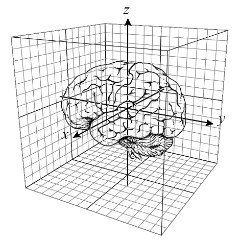

Descartes’ dualism
Wed., Jan. 22
This class session covers Descartes’ arguments for mind-body dualism in his Discourse and Meditations:
(1) The argument from doubt or indubitability argument; (2) the conceivability argument or real
distinction argument or disembodiment argument; (3) the divisibility argument or indivisibility argument.
We also clarify his view as a version of substance dualism and interactionist dualism, and touch on the all-important pineal gland.
Key Concepts: Argument from Doubt, Conceivability Argument, Divisibility Argument, Substance Dualism, Interactionist Dualism
Readings:
required
required, same as last session
Descartes - The Passions of the Soul (excerpt): Textbook ch. 2
optional
Class Notes:
Other Resources:
Early Modern Texts
Stanford Encyclopedia of Philosophy
Internet Encyclopedia of Philosophy